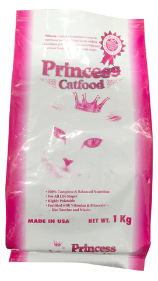

Cats are a popular and beloved pet in many households around the world. They are known for their independent nature, playful personalities, and soft fur. While some people may view cats as aloof or mysterious, they actually have a lot to offer as pets and companions.
Companionship: Cats make excellent pets because they can provide their owners with unconditional love, affection, and companionship. They can be a great source of comfort and emotional support. Lower stress levels: Studies have shown that interacting with cats can lower stress levels and reduce anxiety. Petting a cat can be soothing and calming, and their purring can have a relaxing effect. Health benefits: Owning a cat has been linked to a lower risk of heart attack, stroke, and other cardiovascular diseases. Additionally, some studies suggest that exposure to cats can boost the immune system and reduce allergies.
Low maintenance: Cats are generally low maintenance pets. They are self-cleaning and do not require as much attention as dogs. Entertainment: Cats are naturally playful and curious animals, and can provide their owners with hours of entertainment. They love to play with toys and can be very amusing to watch.
Cats are popular domesticated animals known for their adorable appearance and independent personalities.
They have a keen sense of hearing, smell, and sight, making them excellent hunters of small prey.
Cats are known for their cleanliness and spend a significant amount of time grooming themselves.
They are also very agile and can jump up to six times their body length in a single bound.
Cats are often kept as pets and are known to form strong bonds with their owners.
Domesticated cats have a lifespan of around 12-15 years on average.
There are many different breeds of cats, each with their own unique traits and characteristics.
Some cultures throughout history have considered cats to be sacred or lucky animals.
While cats can be affectionate and playful, they can also be quite independent and may require less attention than other pets.
TICA
non-profit organization that registers and promotes pedigree cats and household pets, and organizes cat shows and competitions.CFA
non-profit organization that promotes the welfare of cats and the interests of cat owners, breeders, and exhibitors, and maintains breed standards for purebred cats.Meow, meow, meow, meow, meow, meeeooooow.
| Products | Price | Quatity | |
|---|---|---|---|
| Whiskas | 500/kl | 20 sacks | |
|  | Princess | 600/kl | 20 sacks |
| Royal Canin | 800/kl | 20 sacks |